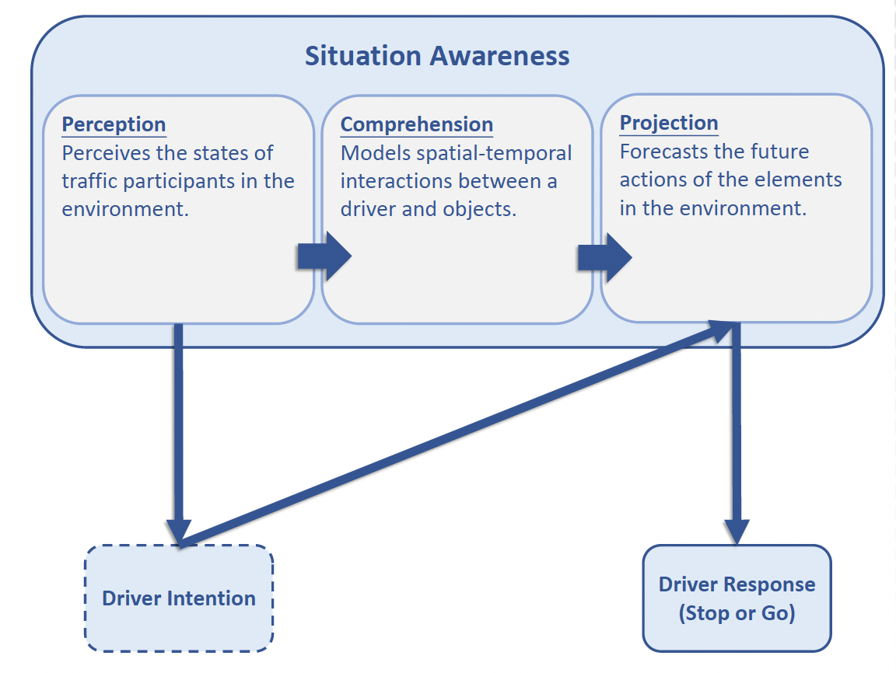

Publications
 |
Learning 3D-aware Egocentric Spatial-Temporal Interaction via Graph Convolutional NetworksC. Li, Y. Meng, S. Chan and Y. Chen This paper proposes a 3D-aware egocentric spatial-temporalinteraction framework for automated driving applications. Graph convolution networks (GCN) is devised for interaction modeling. Extensive experiments are conducted using Honda Research Institute Driving Dataset. |
Who Make Drivers Stop? Towards Driver-centric Risk Assessment: Risk Object Identification via Causal InferenceC. Li, S. Chan and Y. Chen This work proposes a two-stage framework based on causal inference for risk object identification, an essential task towards driver-centric risk assessment. The task of identifying causes of driver behavioral change is formalized in the language of functional causal models and interventions. We evaluate the proposed framework on the Honda Research Institute Driving Dataset (HDD). |
|  | Driver-centric Risk Object IdentificationC. Li, S. Chan and Y. Chen This work introduces a new task called risk object identification. We formulate the task as a cause-effect problem and present a novel two-stage risk object identification framework, taking inspiration from models of situation awareness and causal inference. A driver-centric Risk Object Identification (ROI) dataset is curated to evaluate the proposed system. We demonstrate state-of-the-art risk object identification performance compared with strong baselines on the ROI dataset. In addition, we conduct extensive ablative studies to justify our design choices. |
 |
Photon-Limited Object Detection using Non-local Feature Matching and Knowledge DistillationC. Li, X. Qu, A. Gnanasambandam1, O. Elgendy, J. Ma and S. Chan We present a photon-limited object detection framework by adding two ideas to state-of-the-art object detectors: 1) a space-time non-local module that leverages the spatial-temporal information across an image sequence in the feature space, and 2) knowledge distillation in the form of student-teacher learning to improve the robustness of the detector’s feature extractor against noise. Experiments are conducted to demonstrate the improved performance of the proposed method in comparison with state-of-the-art baselines. When integrated with the latest photon counting devices, the algorithm achieves more than 50% mean average precision at a photon level of 1 photon per pixel. |